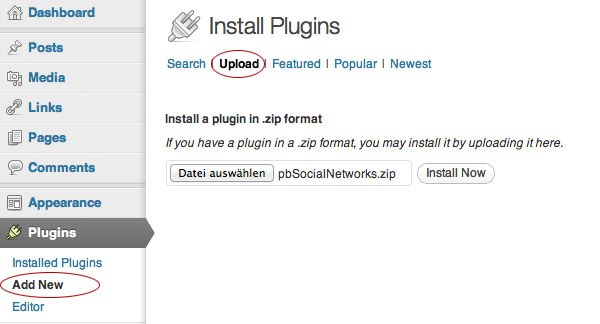
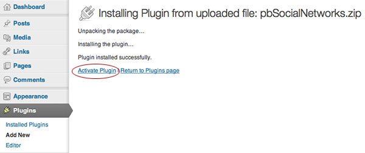
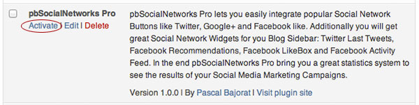

The Installation of pbSocialNetworks Pro is really easy, first go to your WordPress Dashboard (e.g. www.example.com/wp-admin/). Open the Plugin Installation Section Plugins > Add New > Upload and click Select File. Select the pbSocialNetworks.zip Archive and click the Install Now Button.

Now WordPress will show you the installation process. When the installation was finished click the Activate Plugin Link.

Thats all, please note you need to activate the Plugin itself in the Plugin Settings (see the new Menu Entry SocialNetworks) before you see something new on your Website (Frontend).
Connect to your Website with an FTP-Client and open the following Folders: /wp-content/plugins/. Now extract the pbSocialNetworks.zip and copy the pbSocialNetworks Folder to your remote /plugins/ Directory. Note do not copy the .zip Archive, copy the extracted Folder pbSocialNetworks.
After you've copied the Plugin Folder in your Plugins Directory you need to go to your WordPress Dashboard (e.g. www.example.com/wp-admin/) and open the Plugins Section.

Look for the new pbSocialNetworks Pro and click the Activate Link. Thats all, please note you need to activate the Plugin itself in the Plugin Settings (see the new Menu Entry SocialNetworks) before you see something new on your Website (Frontend).
pbSocialNetworks Pro supports the Automatic WordPress Update System, when a new Update was released you will be automatically notified in your WordPress Dashboard / Backend and can install the Update with one click. You find all your WordPress Core, Plugin and Theme Updates in the Menu Dashboard > Updates or specially for Plugins in the Plugins Section.
If you have some Problems with the Automatic Update System you can download the newest Version at CodeCanyon and then follow the Manual Installation Steps.
To uninstall pbSocialNetworks Pro you need to go to your WordPress Dashboard and open the Plugins Section. First click Deactivate in the pbSocialNetworks Pro Entry, then the Plugin is completly turned off, but the Settings and Stats Tables are still exist. To delete all Plugin Files, Database Tables, Settings and Collected-Data you need to click Delete after the deactivation. But note when you delete the Plugin, you will lose all your data that was used or collected by pbSocialNetworks Pro.
Go to your WordPress Dashboard (e.g. www.example.com/wp-admin/) and open the Menu Entry SocialNetworks. The Settings Panel of pbSocialNetworks Pro is really easy, you have one General Tab for Positioning and Styling Options and five more Tabs for the Social Network Button Settings, Open Graph and Stats. When you run pbSocialNetworks Pro first time you need to configure each Tab and (this is important) activate every function you need. After that you can activate the Plugin generally in the General-Tab. This is a little security system that protects your Website against misconfiguration.
The Tabs and Options itself are all self-explanatory and documented directly in the Plugin.
One thing is important to know: If you use the Open Graph Protocol please note you can use the pbSocialNetworks OpenGraph Metabox to change some Settings for each Article or Page. To use this Metabox you need to activate it in the Screen-Options:
To use the Widgets go to your WordPress Dashboard (e.g. www.example.com/wp-admin/) and open Appearance > Widgets There you can find all pbSocialNetworks Widgets marked with a pbSN Prefix. To use a Widget easily drag and drop a Widget to one or more Widgets Zones.
You find the Description of each Widget in the Widget-Box itself. Please note: Widgets will only work when your Theme support the WordPress Widget function.
With pbSocialNetworks you get a helpful Shortcode to include Social Network Buttons in your Articles or Pages:
Use this Shortcode in your Articles or Pages: [pbsn type="facebook" url="http://www.pascal-bajorat.com/"]
Values for type: facebook, twitter or googleplus
Values for url: You don`t need to specify the url if you want use automatically the Article / Page Permalink or you can set a fixed url.
Use this PHP Code to run pbsn Shortcode in your Theme:
<?php echo do_shortcode('[pbsn type="facebook" url="http://www.pascal-bajorat.com/"]'); ?>
The Shortcodes take over the same Settings you do in the pbSocialNetworks Setting Tabs.